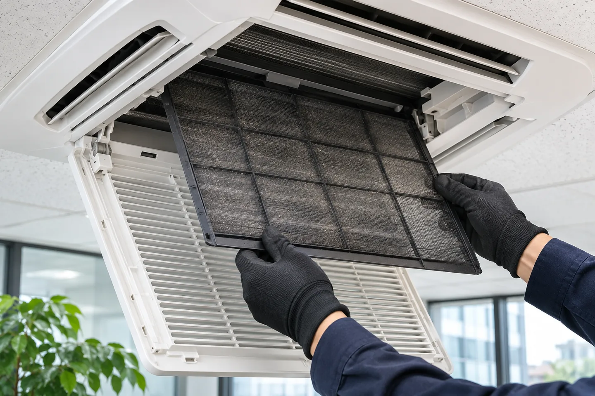
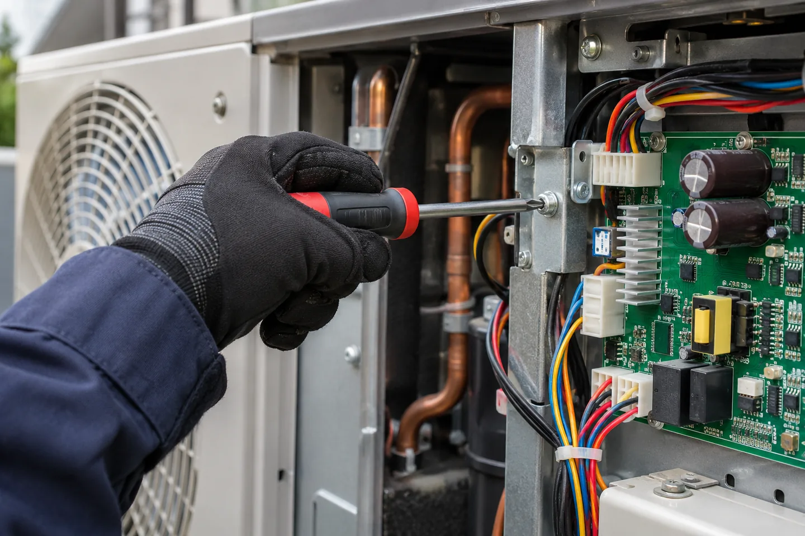
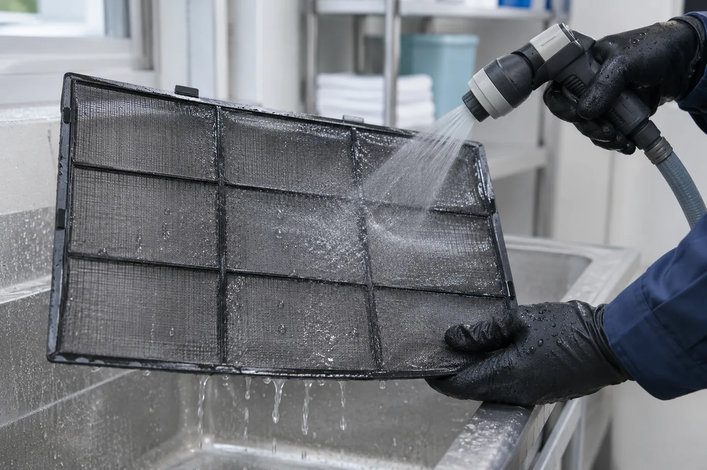

Manutenção preventiva
Inspeção, ajustes e revisão periódica do sistema, ajudando a manter o desempenho e a confiabilidade do equipamento.

Seu sistema de climatização em pleno funcionamento, com manutenção técnica especializada.
Inspeção, ajustes e revisão periódica do sistema, ajudando a manter o desempenho e a confiabilidade do equipamento.

Diagnóstico técnico e reparo de falhas para restabelecer o funcionamento do equipamento, com avaliação da necessidade.

Higienização técnica de filtros e componentes, contribuindo para a qualidade do ar e o bom funcionamento do sistema.

Escolha o tipo de serviço e conte o que precisa.
Preencha o formulário com os dados da sua empresa.
Nossa equipe analisa a solicitação para entender sua necessidade.

A manutenção adequada do ar-condicionado contribui para o bem-estar da equipe e o bom funcionamento da rotina da sua empresa.
Esta é uma demonstração de atendimento empresarial. Em um projeto real, os modelos e as condições de atendimento são confirmados na avaliação.
A periodicidade depende do equipamento, do uso e das orientações técnicas aplicáveis. Informe essas características na solicitação.
Quando houver falhas ou alteração no funcionamento. O problema deve ser avaliado por um profissional habilitado.
Escolha o serviço e preencha o formulário abaixo. Nesta demonstração, utilize apenas dados fictícios; nenhum contato será realizado.
Preencha o formulário e envie sua solicitação de manutenção para o ar-condicionado da sua empresa.
Use dados fictícios.
Projeto demonstrativo · empresa fictícia.
Em um atendimento real, a equipe entraria em contato para confirmar o equipamento e combinar a visita técnica.